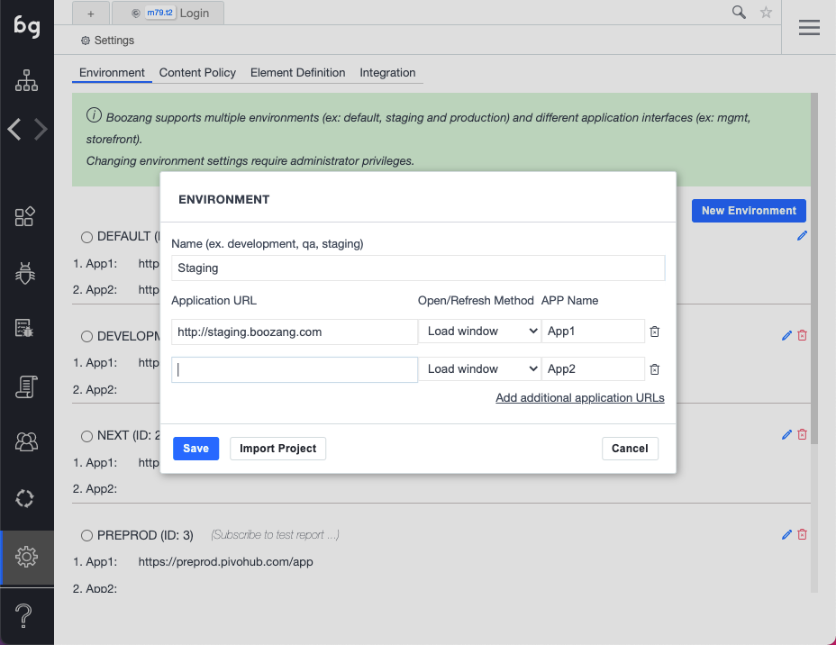
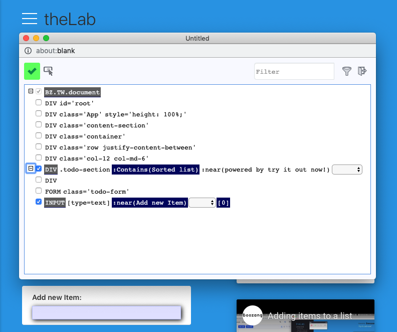
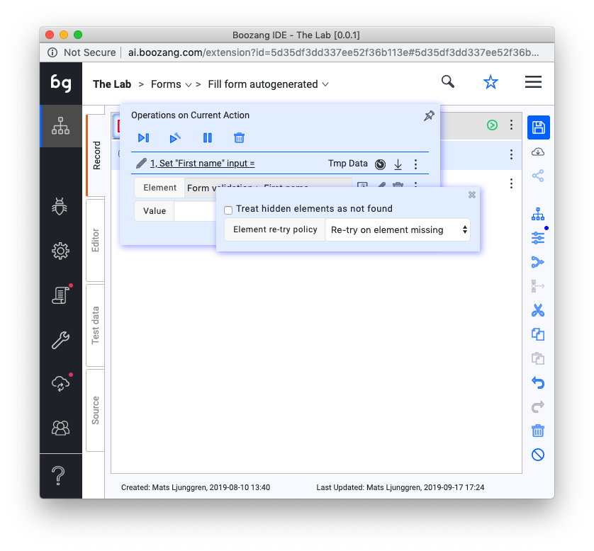
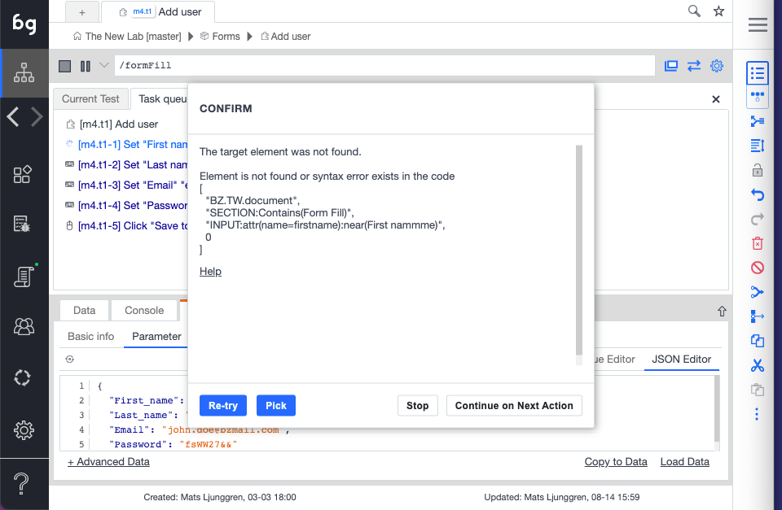

Boozang

Why use Boozang?
At the core
Boozang is a code-less front end testing tool built for the modern web using only Javascript. It allows developers and Quality Assurance engineers to develop front-end tests quickly without the need for programming.
Boozang is not based on Selenium, and does not have the limitations of Selenium and Selenium web driver. Boozang uses it´s own selection language based on natural-language, allowing for native support of TDD / BDD (test/behavior driven developement) and allows for tests to be automatically generated from models.
About the Technology
The Boozang test technology is divided into two parts. The proprietary part of the tool which allows you to author tests record fast and the Open Source test runner which is built on Google Puppeteer, which allows you to run tests from command-line and integrate Boozang into your CI flow or otther tools.
-
Boozang tool: Sign up at https://boozang.com for free and paid license offerings.
- Boozang test-runner: For the Boozang Puppeteer open source test runner see https://github.com/ljunggren/bz-puppeteer and the Docker container https://github.com/degardinn/docker-boozang
Features
Stable to code changes
Boozang is fundamentally different from other test tools. Boozang uses natural language to identify browser elements, instead of the DOM elements, making tests incredibly stable to changes of the underlying implementation. Actually, it´s possible to completely change the underlying technology without affecting the tests. You can go from a Java legacy application to Angular and the tests remain the same, as long as the business requirements do.
Automated documentation
As Boozang is completely based on natural language, all recorded tests are also a user manual. When a label changes, such as "Create Project" being changed to "Add Project", the test will need to be updated accordingly. This means all test documentation is always up-to-date.
AI test repair
As your code changes, Boozang tests remain stable. If you do change any labels or item identifier, Boozang will automatically suggest how to repair your tests, or if no suggestion is available, allow you to reselect the element on the page. This reduces test maintenance immensely and allows you to repair broken tests on the fly.
BDD / TDD
Boozang is built for Test-driven and Behavior-driven development minus the programming effort. Start writing tests directly from requirements. The Boozang AI engine will automatically build tests from your documented test steps. No need to spend the time to maintain a test middleware layer.
Linkability
Boozang is completely built in Javascript and being CLoud-based there is no need for any client-side installation. Simply add an HTML-fragment to your site to activate it for testing.
Cross-browser support
As Boozang doesn't rely on browser extensions or client-side install, it natively runs in any web browser (Chrome, Firefox, Safari, Opera).
Web components / Shadow DOM support and socket-based testing
Supports Web Components / Shadow DOM testing and socket-based testing.
When to use Boozang
Good fit vs bad fit
Boozang is great when testing anything that runs in the web browser. This includes any modern SaaS application, no matter how complex. It´s great when you need to test automate testing for deterministic usage flows, basically conditions that can be determined by a machine.
A rule of thumb is that the more you feel the need to run regression testing, the more value you will find in a Boozang implementation. This means, if you release business critical software often, you will find great value in Boozang. If you release rarely and bugs doen´t have a significant impact, maybe not so much.
A less than ideal fit is also SaaS applications that do a lot of very graphical stuff that needs a human to make a judgement call. Thiese flows can never be fully automated and the value of automation can be limited.
A note on supported technology
Boozang supports any application that runs in the web browser. Boozang also supports hybrid approaches, such as Cordova, Ionic and Xamarin.
Since March 2019, Boozang also fully supports Shadow DOM / Web Components.
Boozang does not support any testing of native IOS and Android application, or any desktop-based applications.
Getting started
Signing up / Logging in
You can sign-up for Boozang from the Boozang homepage at Https://boozang.com. The sign-up link will take you to https://ai.boozang.com. This is the Boozang application server and this is responsible for communicating with the any instances of the Boozang tool, which is actually running locally on the client side.
This is also where an administrator can maintain different teams and different projects, without having to launch anything client-side.
Creating and launching a project
As soon as you have signed up you can go ahead and create your first project in the Cloud dashboard, by clicking the button "Create Project". There are a lot of options available here, but the only thing required is the project name.

Installation Options
Boozang is completely hosted in the Cloud and supports running from client-side without a client-side installation For users who do not have access to the application root we also provide a Chrome browser extension.
Installing the Chrome extension
For users without access to the application web root, or for users who want to do cross-domain testing, we provide a Chrome extension. The Chrome extension can be downloaded from the Chrome web store here: https://chrome.google.com/webstore/detail/boozang/feijjbehfljebjillfefcehfmlolcomf. To launch the Boozang tool using the Chrome extension, simply click "Launch" in the Cloud manegement interface, and you will be prompted to install the Chrome extension.
Installing the bz fragment
Simply create a project at http://ai.boozang.com and download the HTML snippet. The snippet is copied to the web root (where your index.html or similar would be located). In order to launch the Boozang tool, simply access the snippet in any browser, such as http://myapplication.com/bz.html or http://localhost:8080/bz.html.
Tip: Using the bz fragment allows for running tests in headless browser mode. This allows for simple CI integration using the Boozang test runner.
Setting up the environment

Boozang supports many appliaction interfaces (mgmt, traffic, store) across many different environments (test, qa, staging, production). The purpose of this is to be able to allow a single test to be re-used across different environments without any risk of having to edit the test. If tests are duplicated and individually customized to run on an environment, over time maintaining these tests gets very expensive, so it´s better to set this up properly from the get-go.
Modules and Tests
Object-Oriented testing
Boozang takes an object-oriented approach to testing. Just like your application can be divided into modules and sub-modules, so can your tests. It takes some experience to make the perfect test break-down, and it´s different from application to application. Usually, it´s best to try and mirror the components, or modules, of the application in the Boozang tool. The below image gives an example of this

Modules

The modules are used to divide your tests into functional areas of your application. Where other tools usually have tests and test suites, or test suites are just another test in Boozang (using Plug test-case). Modules are used to organize tests to match the functional modules of the application. They work as folders to organize your tests, but also to allow data to be added on the module level. For instance, in the Inventory module in the example, the Test data for inventory should typically be saved as Module data.
Sub-modules
For very complex application it can sometimes be useful to introduce sub-modules. This is particularly useful when you clearly have sub-modules on the application side. For most SaaS applications, such as CMS (content-management system) or ERP (Enterprise resource planning), the application is organized in two levels, making the project-module-test hierarchy sufficient.
Recording your first test
Boozang works within the browser which allows for a very stable recording function. Simply click on the record button in the tool. As you perfrom actions on your web page actions will be recorded. To remove an un-wanted action that was recorded simply press the trashbin next to the action in the main tool view.
As soon as a test has been created you can use the playback button to replay the test steps. Boozang supports 3 different playback modes: Normal, demo and debug mode. Demo mode slows down the playback speed and annotates every test step. This is good for demos and when trying to understand a test that someone else has authored. Debug mode is a very powerful functionality that plays the test, but when encountering an error it highlight the error and allows you to correct it on the fly. When you have corrected the error simple press the play button again and the test will continue it´s execution. This is very useful when updating a test after a big code change.
A test is automatically saved in the local storage of the browser. As soon as you update a test, the test will be checked out by you, and it will appear as locked for your team-mates, which prevents them from making changes. As soon as you click save the test will be saved on the Boozang server, and the lock will be automatically removed, allowing other team-members to make changes.
A note on Window aligment
In order to use Boozang well, we recommend aligning the Boozang tool and your application next to each other side by side in the following way
This allows you to get a good overview of the recorded actions, and an easy way to modify or delete recorded actions.
In-tool help
As Boozang is completely hosted in the Cloud it´s easy to do changes and add useful features quickly. This has a huge upside as we are able to deploy features that customer asks for to all our customers at the same time, to the benefit of all. This also means that new things can appear in the user interface without warning, and in some cases, that the documentation might not be up-to-date all the time.
For this reason, to be able to deliver new features fast without forcing the end user to re-learn, we added an online help function inside the tool. Simply click the question mark in the user interface, and click the functionality and an explanation will appear.

In the help text, you will find an explanation of the function you selected. You will also find any related videos to that function, if available. When clicking a video link, a separate video window will appear and you will be able to follow along with the tool if needed.
The tool
The sidebar

Boozang icon
Clicking the Boozang icon is a shortcut to bring back the user to the project root.
Test Authoring View
This is the main view to create test cases and organize them in the project tree. The test cases you create is organized into modules, to ensure maximum reusability.
Bugs
Bug authoring view. Use this section to record bugs, which are most often visual discrepancies of your application highlighted by the comment function.
In this view you have access to all authoring tools, with the difference that bugs can be assigned to other members in your team.
Settings
The project settings allows the user to set: Environment, Content Policy, Notifications, and Preferences.
Reports
The report view contains the report of the latest test run. When running a test, the user can also switch to the report view to see the report being generated as the test runs.
Tools
In tools you will find import and export tools for the project. This allows an admin user to backup proejcts and also to import projects from other users. There is also a powerful free text search that can search both modules and test and data, and perform replacement as well.
The hamburger menu

Management
Takes the user to the Boozang Cloud Management interface. This allows the user to switch between projects.
Account
Access the account page. Here you can see current service usage and your current license tier.
Console
Opens the Boozang console. Allows the user to inspect data and trouble-shoot tests.
Chat & Message
Opens a popup chat with the team. Here you can monitor project activity and chat with other project members.
Dock mode
The dock mdoe allows the user to switch between undocked (two separate application windows), dock to left (Boozang IDE is to the left) and dock to right (Boozang is on the right). In some cases the applications under test doesn´t support docked mode, so use this option to Undock.
Video Tutorials
This is a link to the Video tutorials on the homepage.
Functional Overview
THis is a link to the latest version of this document.
Video Helper
This opens a small helper that gives you topic based video help based on certain topics.
Note: Some of this video material may have been recorded on top of previous versions of Boozang.
Sign Out
Log out the user.
The top bar

Project Name
The first entry in the top bar will be the project name. Clicking on the project name will take you to the root of the project tree. Use a desciptive name for your project that refrects the product under test, or for companies having a single product, the company name.
Module name / View name
Clicking on the module name in test authoring view will take you to the module level of the tree. When being in a different view than test authoring view, the View name as given in the side-bar will be displayed, such as Settings or Report.
Test Name
The third level of the navigation is only displayed in the test authoring view when a test is selected. In the case of sub-modules, there can also be a number of intermediate levels.
Quick Navigation
Use the Caret down icon to qucikly switch between modules and tests. You can also create new mdoules, new test suites and new tests from here.
Search
To do free text search on any module or test simply hit the Search icon. As you type, the matching search results will display.
Hamburger
Click the hamburger icon to open the hamburger menu.
The action list

Reload URL
Reloads the test url in the application browser window. Use this to make sure the correct URL is loaded in the application window, for instance when recording a new test.
*Tip: Double-clicking the test row also performs this action
Action icon
An icon that indicates the action type. The different action types are Validate Result, Mouse Event, Keyboard Event, Extract data, Javascript, Comment, Refresh Window, Plug Test, and Visit Links.
Tip: Clicking the action icon toggles breakpoints. Test execution is temporaily stopped at breakpoints, allowing for troubelshooting of tests. To resume playing the test, simply click the play button.
Action description
This is the human-readable description of the action, and defaults to the actual action code. If needed, this can be changed in the action details page.
Data Indicator
Orange indicates that dynamic data is used. The following data scopes are available: $parameter, $test, $module, $project, $loop
Add action in list
Inserts an action in the action list. It´s also possible to initiate a recording that inserts actions anywhere in the list.
Run action
Executes a single action.
Tip: Double-clicking the action row also runs action.
Custom timeouts
Indicates that the timeouts for that particular action has been customized. This can be done by editing timeouts in action details. In the case of slow response times during recording, this will also be added automatically to ensure test stability.
Custom exit conditions
Indicates that exit conditions for the action has been customized. Exit conditions signifies what action is taken on a certain action outcome. Action outcomes are Success, Fail and Error. Success means action was executed successfully, Fail means that it executed falsely, such as validation fail, and Error means element not found.
Action details
Opens the action details panel. The action details can be pinned to stay open, or always be seen at the top or base of the action list. When pinned, action details simply shows the main controls.
Record / Play
Recording
In order to record a test, simply click on the record button. Boozang will now catch any action being made in the application window. To stop recording, simply click stop. In the case where the application window is closed, the record will open the application window at the current URL. Use the Reload URL button to make sure that the URL is set correctly before recording.
Playing a test
In order to play a test, simply click the Play button. To play the test from the start; make sure that the first row (gray) row of the action list has been selected as this signifies the actual test. You can also play a test from a specific action. Simply select the action you want to play from and clikc the Play button. You can choose to watch all the actions play and see the result in real-time, or switch to the report view to see the report being generated.
There are several play modes available
Play
Plays to end. Launches AI repair if element not found, but continues after a set time.
Play in repair mode
Plays test but tries to repair it when element not found.
Play in demo mode
Plays the test case step-by-step and highlights all actions in the application window using annotations (compare comment function).
Step-by-step
Plays the test one step at a time.
Automation mode
Emulates running the test from the command line using the Boozang test runner. After a test has been run, a dialog will show allowing the user to opt-out of browser shut down. Running in this mode will notify all report subscribers, so it´s a good way to test email notifications.
Running in automation mode never activates AI repair.
The Toolbar

Switch view: List / GUI
The switch view button toggles between table and diagram view.
The views are equivalent in functionality, but the diagram view better illustrate the flow between tests, while the table view displays the actions in a more linear fashion.
Tip: Use table mode for test authoring, and experiment with diagram view when executing tests.
Parameter
Use this to set dynamic data used by the test, to improve test re-usability. You can set this data when running the test, and override if when calling the test from an upstream test case (using plug test-case). When doing form fills, you can also bind the form data directly into the parameter.
Tip: Think of this as parameters/arguments to a function in conventional programming. This greatly promotes test re-use and good test automation practice.
Group
The group function groups actions together. This allows you do keep your test in order, and to skip a set of actions using the exit condition Exit Group. By using Else-group, this can be used to implement simple conditional functionality (compare: if / else)
Tip: Use Ctrl/CMD functions to multi-select actions.
Make test case
Breaks up a group of actions into a separate test and replaces the group with a reference to that test (Plug-test case). Allows you to quickly re-factor your tests to remove duplicate action sequences.
Use Ctrl/CMD functions to multi-select.
Cut / Copy /Paste
Standard Cut functionality. Use Cut and Paste to move actions between tests, tests between modules, or data between tests and modules.
Use Ctrl/CMD functions to multi-select.
Undo / Redo
Undo /Redo last un-saved action. In Boozang, you cannot undo saved changes as they have been committed to the Cloud.
Delete
Deletes one or several actions.
Tip: Use Ctrl/CMD functions to multi-select.
Disable
A disabled action is skipped when a test is run. Useful to debug tests.
Action details
Element selection
Selecting the element
Boozang uses custom element selectors based on what a user will see rather than classes, ids or other attributes. This means that in order to use class or id, this usually needs to be explicitly defined. By avoiding using classes and ids as primary identifiers, Boozang tests become very stable to code changes, and can automate applications with dynamic ids and classes freely.
The element bar
For most actions, the user can select an element (Validations, Events, Javascript and Extract Data). When recording or picking an element Boozang tries to guess the best path to the element. Usually, this is sufficient, but sometimes this needs to be edited.
Re-picking an element
First step if an action isn´t working as expected is simply to re-pick the element in the application window. To make sure, double-click the action and confirm that the action is working.
Tip: Click in the element dialog and see if the correct element is highlighted in the application window.
Edit element with DOM picker
If this is still not sufficient, you can try to edit the element. If the current element is not found in the application window, the user will be asked to pick the element. If found, the DOM picker window will be launched which allows the user to fine-tune the element path
Understanding the DOM picker
The DOM picker allows the user to precisely specify the element selector. During recording, Boozang will under normal circumstances be able to guess the best unique element path. In some cases, it´s desirable to override the pre-determined element path.
Common cases when element path needs to be changed
Wrong element picked
When clicking on the element, if the wrong element is highlighted, this means the path isn´t good. Try re-picking the element. If the problem is still there, edit the element path using the DOM picker.
Element index > 0
If the element index > 0 it means that the element isn´t uniquely identified. This will be indicated by a warning. Use the DOM picker to make sure the checkbox icon turns green (meaning element index ==0).
Extract data
Whe extracting data, the data itself should not be used as an element selector. Use the DOM picker to key of id or class, or other attributes.

Element path operation
The element path has the following operations. Boozang uses an expanded version of the jQuery selction standard to create a more human-readable code to identify elements. The basic pattern is that the lowercase jQuery standard operations, while uppercase operations are case-insensitive. All recordings will generate Uppercase operations by default. The operations that will be recorded for a test-case is marked by an asterix (*)
-
contains (*): Is true if the selected element (case-insensitive) have the exact string alongside other stringsEx:div:endContains(lws) Yes:<div>lws ok</div> No:<div>lwsok</div> Yes:<div>lws <span>ok</span></div> No: <div><span>lws</span></div> equals (*): Is true if the selected element (case-insensitive) have the exact string
Ex:div:endEquals(lws)
Yes:<div>lws</div>
No: <div>lws ok</div>
No: <div>lwsok</div>
No: <div><span>lws</span></div>-
Contains: Is true if the selected element or any of it's children (case-sensitive) have the exact string alongside other stringsEx:div:equals(lws) Yes:<div><span>lws</span></div> No: <div>lws ok</div> -
Equals (*): Is true if the selected element or any it's children (case-insensitive) have the exact stringEx: div:Contains(lws) Yes:<div><span>LWs ok</span></div> No: <div>lwsok</div> -
contains: Is true if the selected element and all it's children (case-insensitive) matchesEx: div:Contains(lws) Yes:<div><span>lws ok</span></div> Yes:<div>lwsok</div> No: <div>lwok</div> RowCol (*): Used to identify table cell (case-sensitive).
Ex: TD:RowCol([value|name])
Yes:<tr><td></td><td>name</td></tr>
<tr><td>value</td><td>1234</td></tr>
No: <tr><td></td><td>name</td></tr>
<tr><td>VALUE</td><td>1234</td></tr>-
rowcol: Used to identify table cell (case-insensitive).Ex: TD:rowcol([value|name]) Yes:<tr><td></td><td>NAME</td></tr> <tr><td>VALUE</td><td>1234</td></tr> No: <tr><td></td><td>name</td></tr> <tr><td>value1</td><td>1234</td></tr> -
`near (*): Used to identify form input box based on label selection (case-insesitive).
Ex: input:near(name) Yes:<div><label>name: <input/></label></div> Yes:<div><label>name: </label><input/></div> Yes:<tr><td>Name</td><td><input/></td></tr> No: <div>name</div><div><label>value</label><input/></div>Element policy
Under the kebab menu you can also access the element policy.

Treat hidden elements as not found
Normally, hidden elements can still be clicked in a programic fashion. Check this box to trigger Error ()"element not found") when element is hidden.
Element re-try policy
Default behavior is to Re-try on element missing. Customize this to Never re-try or Re-try on content mismatch (re-tries when element is found but content is wrong).
Repairing an action

When a test is run and an action element cannot be found the AI test rapair screen will be launched. This will allow the user to simply re-pick the element from the application window. If a matching element is found, Boozang will suggest the element for the user. This allows the user to repair tests ultra-fast even when there have been significant code changes.
Tip: In normal playmode the user is asked if the test should be repaired. In Repair mode the AI repair is always launched, and in Automation mode AI repair is never launched.
Action types
Mouse event
This event corresponds to a mouse action, meaning a click or a movement of the mouse. By default, Boozang captures on clicks in the recording (otherwise the recording becomes very noisy catching too many events). The exception to this is when holding the mouse button down, to emulate drag and drop. In this case Boozang registers a particular drag-and-drop event. You can add mouse events manually to emulate mouse-over event and to create specific mouse conditions.
Tip: In the case of for instance form fills it can be useful to try both using key-presses and mouseclicks to see what works best.
Keyboard event
This event corresponds to a keypress. This is captured in the recording for every time a key is pressed.
Tip: In the case of for instance form fills it can be useful to try both using key-presses and mouseclicks to see what works best.
Validation
Creating a simple validation
In a test, it´s common to make sure that a certain outcome is achieved. In Boozang we do this using validation, also known as assertions. To create a validation, simply click on the validation icon and select the element to validate in the application window. The default validation content format: "validate exists" will be created. If you want to change the validation content format to "innerText", "data", or "screenshot" you can do this in the tool window.
Validate Exists
The default validation is "Validate Exists", that will simply verify that the element exists. To edit the validation content format simply change it from the action detail page. The expectation value will be automatically updated.
Inner Text
If you want to validate the content of an element, change the Content format dropdown to innerText. This way the text content of an element is compared. When changing this, the result box will be populated with the content from your application but can be changed manually. This is very useful for string comparisons. One advantage of using Inner Text is that upon validation failure, the report will contain the difference between expected and real result.
Data
The data format is very powerful, and looks for a set of data inside the selected area. Usually it´s combined using data variables.
Screenshot
You can also choose to take a picture of the element and compare that to the image of an element of future runs. This is useful when doing exact pixel by pixel comparisons, but should be used with caution as changing image dimensioning can make this assetion fail.
Tip: It can be useful when needing to create assertions on indicators or switches, that only changes visually and code stays the same.
The DOM picker
Sometimes the element you selected in the page isn't the one you intended. In this case, simply click the DOM picker and re-select the element. The DOM picker dialog will popup where you can select exactly what to validate in the DOM tree. Use the checkboxes to select which elements to include in the matching. Make sure that the checkbox has a green highlight, which means the element is uniquely matched (not indexed).
Javascript validations
The default validation is the HTML validation. By changing method to "Script", you can directly do validations using Javascript. The Javascript function is written in the standard Boozang format
(function(){
//return true/false;
})()and must return true or false. If an element has been picked with the DOM picker this will be available using the handle $element. Standard data handles, such as $project, $module, and $test will also be available, as well as the test window handles $TW. For more information about data see data section.
Extract data
Note: For API versions of these actions check the API section.

Similarities with Validation
With Boozang it´s possible to extract data from the application window. This is very similar to the Validation action, with the difference that the element extracted is copied into a data variable. Make sure to familiarize yourself with the Validation action before reading this section.
Introducing data
Start by defining a data variable in the data tab. For extraction, you typically want to use a property. The property can be defined on the project, module, and test level. Add it on test level if the data will only be used in the test case. Add it on module level if the data will be used across different tests in the module, but not on different modules. Add it on project level if it will be used globally.
Extracting data action
To add an extract data action, simply click on the Plus icon and select Extract data, then click on an element in the application window you want to extract.
Javascript

The Javascript action
Boozang also allows you to execute Javascript directly in the application. This can be very useful when trying to do more advanced things that aren't covered by the set of actions Boozang has out-of-the-box.
The handles
When writing Javascript there are some particularities in Boozang that needs to be respected. In order to access the application window, you will have to use the handle $TW (test window). This means to be able to manipulate the application window document tree (DOM) the user needs to use $TW.document. When referencing the only document it references the Boozang tool window, not the application window.
Using data (variables)
In Boozang you can reference data directly in Javascript. To access data, use the handles $project, $module, or $test, depending on what level the data was added. For instance, to reference a username that was added on the module level, use $module.username.
Trouble-shooting
In order to troubleshoot the application it´s sometimes useful to add debugging code. For instance, to write the contents of the module level data "username" use "console.log($module.username)" to write it to the tool window and $TW.console.log($module.username) to write it to the application window. You can use the Chrome developer tools to easily verify this.
Note: Avoid using $TW.alert() as Boozang interprets this as application popup windows and intercepts them.
Comment

Why comment?
In a lot of cases, there are errors that can only be spotted by a human, such as look & feel bugs or poor choice of language. In this case, it´s very useful to be able to point this out and have a simple way for a team member on the receiving side being able to correct this. For these cases, we use the Comment action.
The Comment action
The comment actions add a comment, or annotation, to the application. In order to add a Comment, simply click on the Plus icon and select Add Comment, and select the element in the application page to Comment. You can write directly into the Comment dialog on the application.
Running a test with comments
When running a test with comments, the test will execute and stop at the first comment. In order to go to the next comment, simply press play again and the test will continue executing until it finishes or hits the next comment. This is very useful when fixing look & feel issues, as several issues can be recorded in the same test case.
Refresh
Data types

Introduction to data types
Boozang supports a number of different data types: Property, Object, Array, CSV, File, Request data and JS (Javascript function).
Properties
The property is a simple name-value pair and can be referenced directly. For instance, a property username = boozang added on test-level, can be referenced {{$test.username}} (=boozang).
Pro-tip: You can verify this in execution by printing it to your application console window by creating the following Javascript action $TW.console.log($test.username)´.
Objects
Objects in Boozang are the one-level sub-set of JSON objects and are ideal for grouping related data together. For instance, create the Object loginInfo and add username = boozang and password = p@ssw0rd. The data can be referenced by typing {{$test.loginInfo.username}} and {{$test.loginInfo.password}}.
Array
The arrays are great for storing a list of items.
Tip: Arrays can be used to drive data loops
CSV data
CSV data allows you to handle a large collection of Objects and copy data from software such as Excel. Simply create a name for the collection, such as inventoryItems. Start by adding the field names as headings separated by tab-spaces. When you are done defining the data hit Enter and fill out the values tab separated. Pro-tip: You can copy a whole table from Excel simply by using copy-paste.
Tips: CSV data can be used to drive data loops.
File data
File data is used to test file upload and similar user interactions. Try and use small sample files as large files tends to weight down on the test client, consuming memory or slowing down performance. It is also recommended to fetch files from an external source (see Request Data).
Request Data
It is also possible to fetch data from an external source. Simply type in a URL and choose CSV, JSON or File. The CSV file should be comma-separated (field1name1, fieldname2, \n value1, value2) and not tab-separated.
JS (Javascript functions)
It is also possible to specify Javascript functions directly. The functions can be in two forms: Date.now() or fining the data hit Enter and fill out the values tab separated.
Tip: You can copy a whole table from Excel simply by using copy-paste.
File data
File data is used to test file upload and similar user interactions. Try and use small sample files as large files tends to weight down on the test client, consuming memory or slowing down performance. It is also recommeded to fecth files from an external source (see Request Data).
Advanced action types
Visit links
Data binding
Binding from forms to variables
Binding from variables to forms
Advanced data functionality
Boozang regular expression engine
Setting up regular expressions
Using auto-fill functionality
Binding auto-fill with data bind
Settings
Environment
Content-policy
Preferences
Notifications
Reports
The report view
Team
Adding team members
Access policy
The CI user
Synchronize
Tools
Import
Export
Search
Loops, matrix testing and bz-skip keywords
Setting up a simple data loop
Matrix testing
Keywords: bz-skip and bz-stop
API testing
Validate API call
Useful resources
In order to simply mockup a REST server, we strongly recommend https://github.com/typicode/json-server that allows you to create a fake REST API from a JSON file in less than 30 seconds.
Introduction to API validations
The API validation is very similar to an HTML validation except that the validation is done towards an API end-point. Simply click on the Plus-sign and choose "Validation", and select Request/Response (API). In actions details, you can now input the API end-point URL and HTTP method (GET, POST, DELETE, etc.).
Doing HTTP GET validation
Use the HTTP method GET to validate a response from a REST API. Simply select HTTP method GET and enter the end-point URL. Click Play on the action to automatically populate the expectation value.
Doing an HTTP GET without validation
In order to trigger the HTTP GET without validating the result simply use a comparison operator to "regexp" and set the expectation field to ".*".
Adding custom headers
When doing API calls it's very common that you need to add custom HTTP request headers. In order to do this click HTTP header and add header data. This needs to be in data format, i.e.
{ Accept:"json" }
Doing HTTP POST validation
You can post data to an API end-point using HTTP method POST. When doing this make sure to add the POST data to the HTTP data field.
Data
In all these fields you can also bind data. As an example, in order to set headers as data this can be done as an object, for instance, "jsonheader","Accept","json". In order to reference it on the actions-details use {{$test.jsonheader}} in the header field.
Extract data API call
Similarities with Validation
Extracting data is identical to API validation except that the returned response will be saved in a data variable. Make sure to familiarize yourself with the API Validation action before reading this section.
Introducing data
Start by defining a data variable in the data tab. For extraction of API data you typically want to use an Object. The Object can be defined on the project, module, and test level. Add it on test level if the data will only be used in the test case. Add it on module level if the data will be used across different tests in the module, but not on different modules. Add it on project level if it will be used globally.
Assigning data
The result will be contained in the $result variable. To assign the API response to test data called "dummy" write the following in the Extract Data window
$test.dummy = $result
Data Conversion
Extracting data action
To add an extract data action, simply click on the Plus icon and select Extract data, then click on an element in the application window you want to extract.
AI build login / logout case
Copyright (c) 2019 Boozang Technologies Inc.